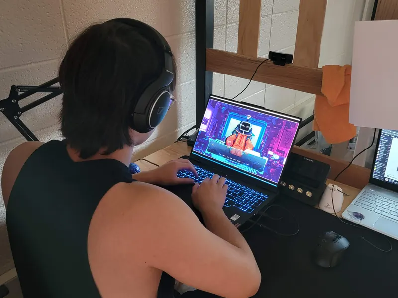
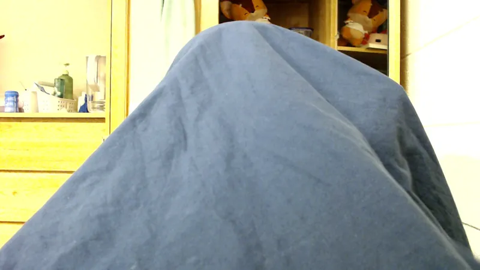
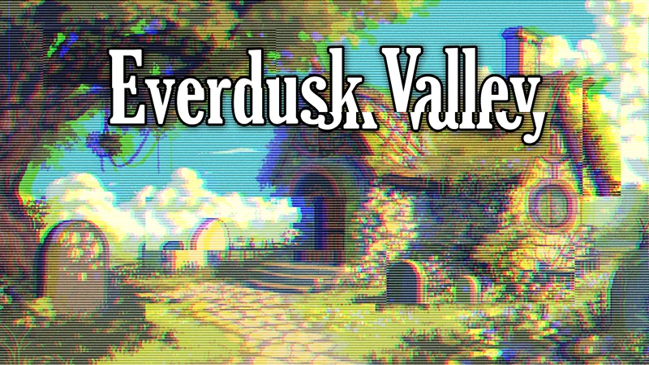
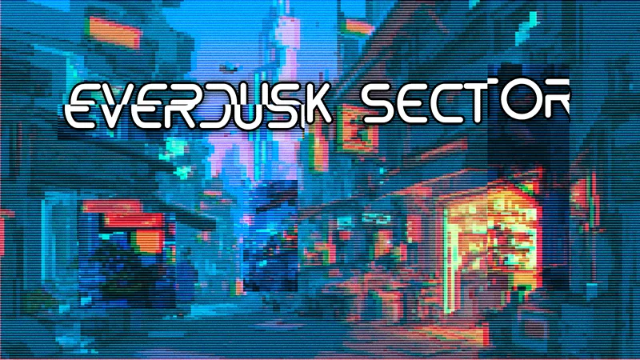

On this page
TL;DR
Over the summer of 2024, I had a burst of creativity and decided to create a visual novel, but life got in the way and the project was shelved. In the fall, I found a new opportunity through a week-long game jam, where I assembled a team and committed to making the game. We faced numerous challenges, including time zone differences and my own midterms, but I worked through the night coding and pulling everything together, eventually submitting just 15 minutes before the deadline. Despite feeling the game wasn't fully finished, I added some final touches, including voice-acting one of the characters. After playing the game for the first time post-development, I caught a few bugs and made improvements. In the end, our team pulled two all-nighters, made 104 Git commits, and finished in the top quartile out of 1,500 entries—a solid achievement for our first game jam.
Summer, 2024:
Over the summer of 2024 I had this burst of creativity where I wanted to create a game. Specifically, I wanted to use the medium of the visual novel to tell a really great story. I've always wanted to create things. To tell a story. But life got in the way, and the project was shelved. Still, the urge to create lingered.
Fast forward to the fall semester. I was taking a creative writing class focused on fiction, and I found a new opportunity to tell a great story: a game jam. For those unfamiliar, game jams are intense competitions where developers come together to make a game within a limited time frame—this one was just a week long. Inspired and determined, I set out to find a team.
I joined a Discord server dedicated to the game jam and quickly assembled a group: an artist, a musician, a pixel artist, and a writer. None of us could devote 10 hours a day to the project, but we all shared the same goal: to create something high-quality in the short time we had.
September, 2024:
This time, I was committed to seeing it through. I was going to make a game from start to finish in just a week. But several logistical hurdles stood in the way—first, I had a midterm and several assignments due that same week. On top of that, my teammates and I were scattered across different time zones. They were six hours ahead, so with everyone juggling their own work, classes, and responsibilities, we couldn't even find a good time for calls. Instead, we had to rely on messages, sending updates back and forth.
Process
When the final stretch arrived, I sat down at my computer around 10 PM, expecting to work until midnight—maybe 1 or 2 AM if I hit any snags. I had it all planned out: hit submit, collapse into bed, and finally wrap up a grueling week with my Minecraft fox plush. I started coding, editing the manuscript, and pulling all the pieces together—the story, the artwork, and the music. Hours slipped by in a blur of Visual Studio Code and Google Docs, and when I next checked the clock, it was 3 AM. I wasn't even close to being done. And the due date was in 3 hours—at 6 AM.
The rest of the night passed in a blur, and to this day I'm still not sure how I actually did it all. I worked for over 12 hours straight, only taking breaks to eat (mostly bananas) and use the bathroom. Visual Studio Code and Google Docs sat open as I typed away, taking the story that the writer submitted and the beautiful art and fantastic music and crafting it into a polished game.

The rest of the night is a haze. I somehow powered through over 12 hours of straight work, only stopping to grab a banana or run to the bathroom. I kept coding, writing, and making final tweaks. When I finally hit submit, there were 15 minutes left before the deadline. Relief washed over me, but the thought that the game wasn't truly done still gnawed at me. Regardless, I needed a break. Stepping into the sunlight after having locked myself in my dorm for 12 hours straight was among the most euphoric experiences of my life.
Yet, I couldn't shake the feeling that there were more things to polish. I had this ambitious idea to voice-act one of the characters—a two-tailed fox—so I threw together a makeshift voice-acting setup. I must've looked stupid, but I didn't care. I spent the rest of the day wrapping up stylistic touches, recording my lines, and finally called it quits by evening. Time for a much-needed rest.

After a long sleep, I sat down to play my own game for the first time. Amazingly, I'd never gone through it from start to finish during development, so I wanted to estimate the total playtime and catch any remaining bugs. It took just over an hour to get through the dialogue, and I'm glad I played it—catching a few minor issues and making clarity adjustments along the way.


In the end, our team pulled two all-nighters, I made 104 Git commits, and wrote around 5,147 lines of code, most of which was dialogue. Despite the exhaustion and the chaos, we did it. We made a game. And considering the challenges we faced, it didn't do too badly! Out of 1,500 projects, ours landed in the top quartile. Not bad for a first game jam, especially one where I had so many other responsibilities.